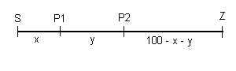

Lösung PUZZLE 15: Bananentransport in der Wüste
Ergebnis: Der Scheich erhält 53 Bananen.

Bezeichnet man den Start in Kashaba mit S, das Ziel in Lumbubu mit Z und nimmt man zwei Zwischenlager bei P1 und P2
an, so ergibt die Lösung der linearen Optimierung (s. weiter unten) für die Distanz von S bis P1 20 km und
für die Distanz von P1 bis P2 33 km.
(Die Annahme genau eines Zwischenlagers führt auf das Resultat von 40 Bananen)
Dies ergibt den folgenden Transport:
- 100 Bananen aufladen, 20 km zu P1 marschieren, dort 60 Bananen abladen und zu S zurückkehren.
- Nochmals dasselbe wie bei 1.
- Bei S 100 Bananen aufladen, 20 km zu P1 marschieren, dort 20 Bananen aufladen.
- Von P1 33 km zu P2 marschieren, dort 34 Bananen abladen und zu P1 zurückkehren.
- Bei P1 die restlichen 100 Bananen aufladen, zu P2 marschieren und dort 33 Bananen aufladen. Weil das Kamel bisher so gut gearbeitet hat, darf es hier zusätzlich die 'Restbanane' essen!
- Von P2 47 km zum Ziel Z marschieren und dem Scheich 53 Bananen übergeben.
Für die mathematisch Interessierten das 'Programm' der linearen Optimierung:
x sei Distanz von S zu P1, y diejenige von P1 zu P2 in km.
Sicher x>0 und y>0. Weiter x<50 und y<50 klar wegen Verlust von 1 Banane pro km.
Bei P1 muss die Anzahl der Bananen nach der fünfmal zurückgelegten
Distanz x kleiner oder gleich 200 betragen, also muss 5x ≥ 100 sein.
Bei P2 muss die Anzahl der Bananen nach der dreimal zurückgelegten
Distanz y kleiner oder gleich 100 betragen, also muss 3y ≥ 100 sein.
Die total zurückgelegte Distanz ist 5x + 3y + 100 - x - y = 4x + 2y +100. Sie muss minimal werden
(denn 300 - total zurückgelegte Distanz muss maximal werden). Also:
x > 0, y > 0
x < 50, y < 50
5x ≥ 100,
3y ≥ 100
Zielfunktion z(x,y) = 4x + 2y soll minimal werden
Die Lösung dieser Optimierung ergibt für x 20, für y 33+1/3. Die Anpassung auf ganze Zahlen führt zum Ergebnis.